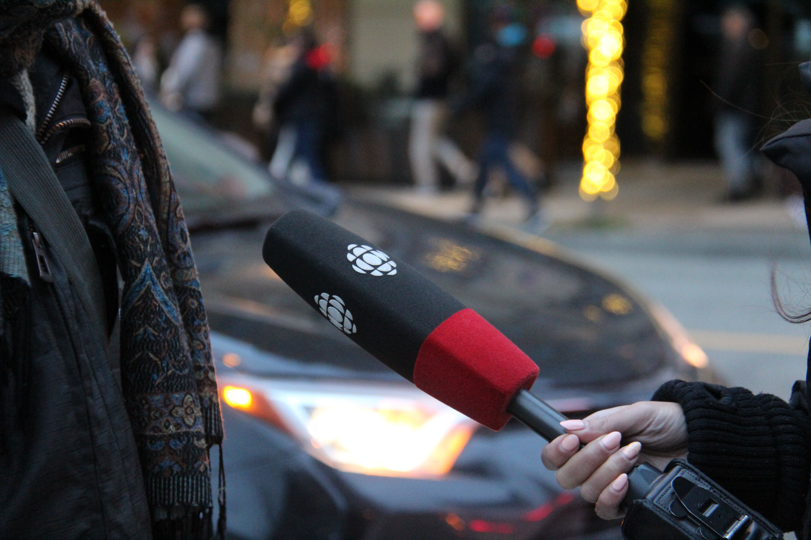
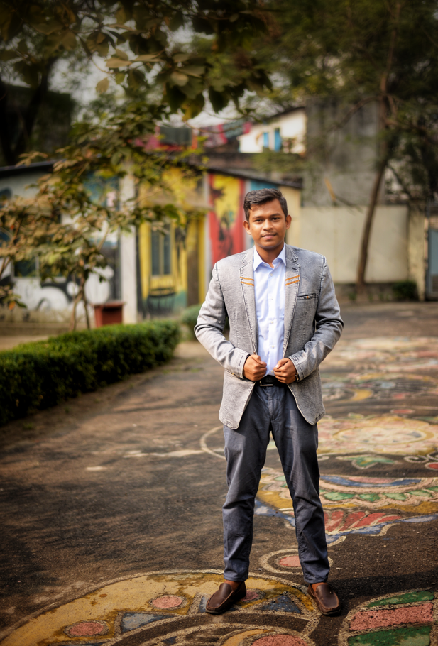
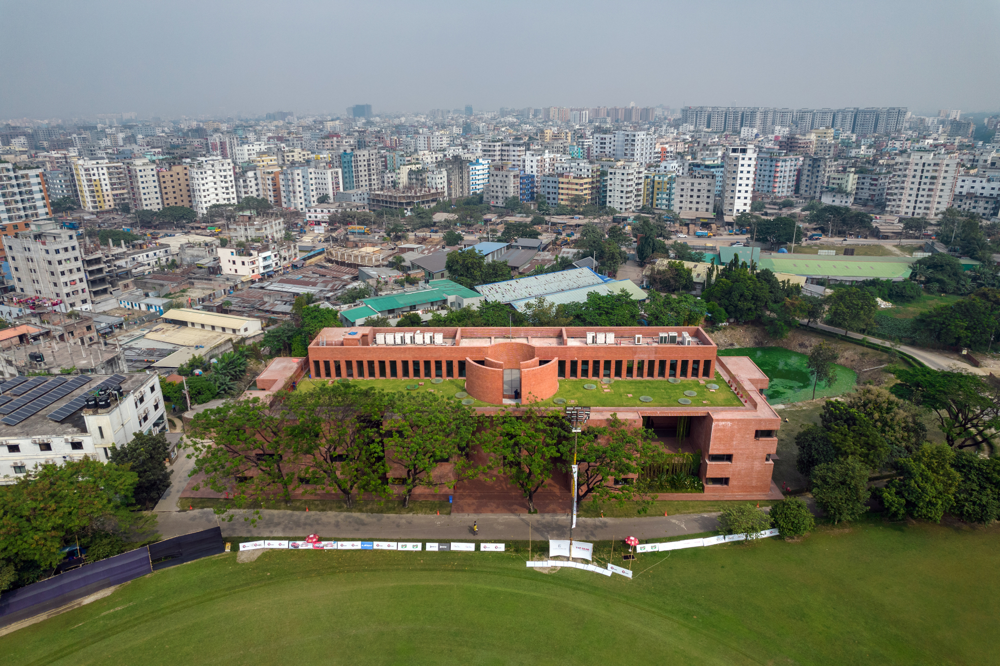

01
CORE VALUE
PASSION
Sports have always been more than just an interest for me. They have shaped my curiosity, energy and desire to tell stories that connect with people.


A Communication for Development graduate passionate about creative communication, newsroom editing, news production, storytelling and sports journalism.
EXPLORE PROFILE ↘I am a Communication for Development graduate passionate about creative communication, newsroom editing, news production, storytelling and effective media practice.
My academic journey has allowed me to work across research, digital communication, visual storytelling, development communication, environmental issues, public communication and media production.
Alongside academic work, sports journalism has become an important part of my professional direction. I am interested in transforming information into stories that are accurate, engaging and meaningful for audiences.
Working in digital sports media with a strong interest in football, cricket, sports storytelling, newsroom practices and audience-focused digital journalism.
VIEW MY WORK ↗From the newsroom to the field, my goal is to communicate information with clarity, context and responsibility.
Three ideas shape the way I approach communication, journalism, learning and professional growth.
Sports have always been more than just an interest for me. They have shaped my curiosity, energy and desire to tell stories that connect with people.
My strength comes from combining communication knowledge, media practice, research, storytelling and the ability to keep learning through real-world experience.
My goal is to become a renowned sports journalist in Bangladesh and build a career where journalism, media communication and meaningful storytelling meet.

My academic journey at ULAB has allowed me to explore communication through research, media production, development practice, visual storytelling and real-world social issues.
EXPLORE ACADEMIC WORK ↘A selection of research, communication campaigns, visual storytelling, development projects and media work developed throughout my academic journey.
Every project, assignment and professional experience has contributed to a broader understanding of communication. From academic research and development communication to journalism and sports reporting, the journey continues.